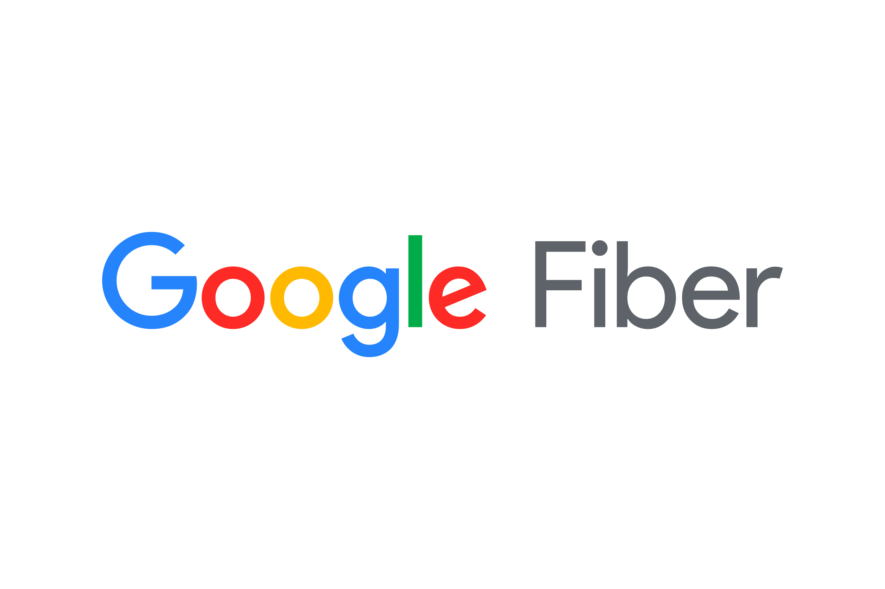
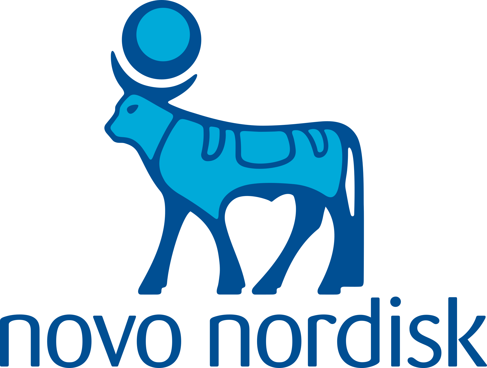
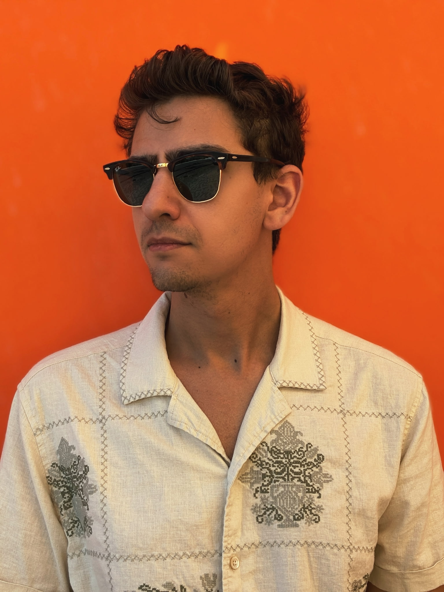
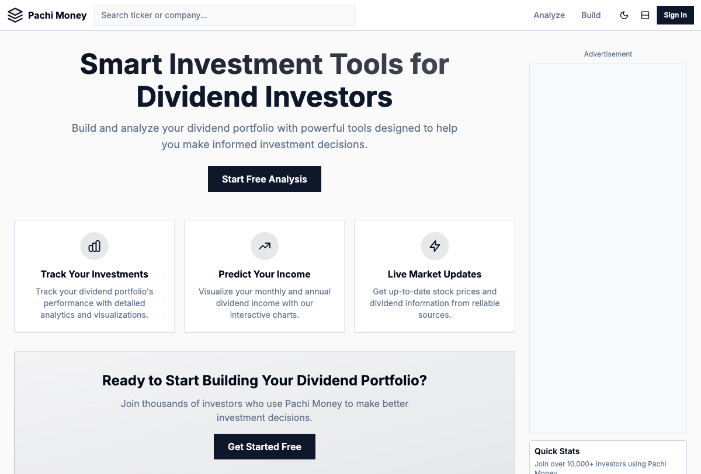
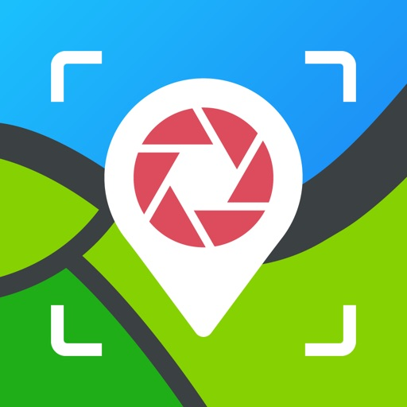
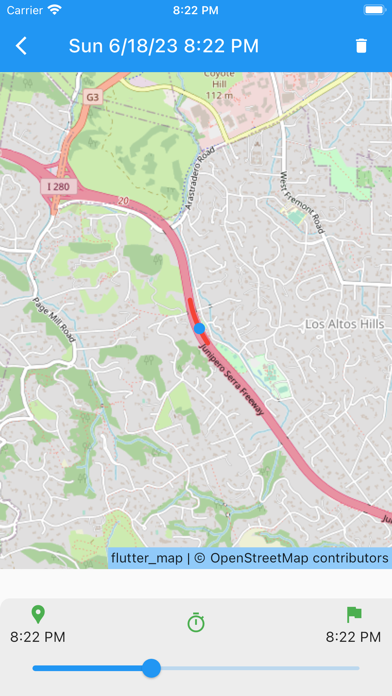
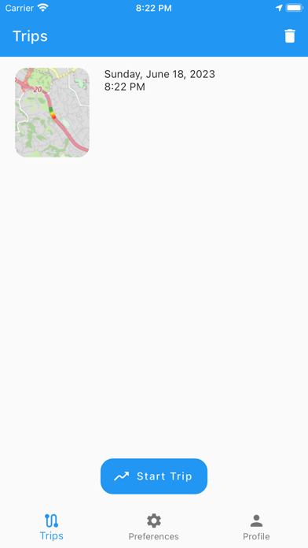
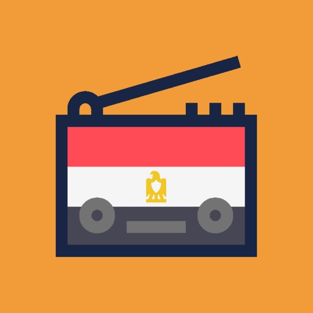
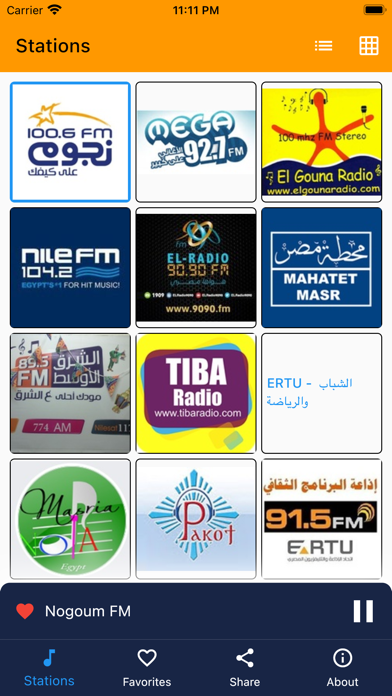
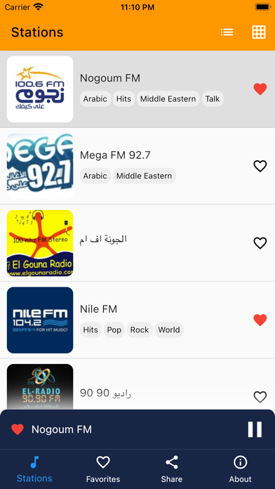

Brands I've worked with




Software Engineer at Warner Bros. Discovery, building products for HBO Max and the broader WBD platform. 12+ years delivering end-to-end web and mobile solutions — from startups to global media.
Brands I've worked with


Smart investment tools for dividend investors — analyze portfolios, predict income, and track live market data.


↗Automatic trip logging and dashcam app for iOS. Records drives, journals routes, and keeps a personal history of every trip — hands-free.



↗Stream live Egyptian FM radio stations from anywhere in the world. Built for the diaspora community staying connected to home.



Available for select freelance projects. If you're building something and need an engineer, reach out at andrew@andrewtechful.com